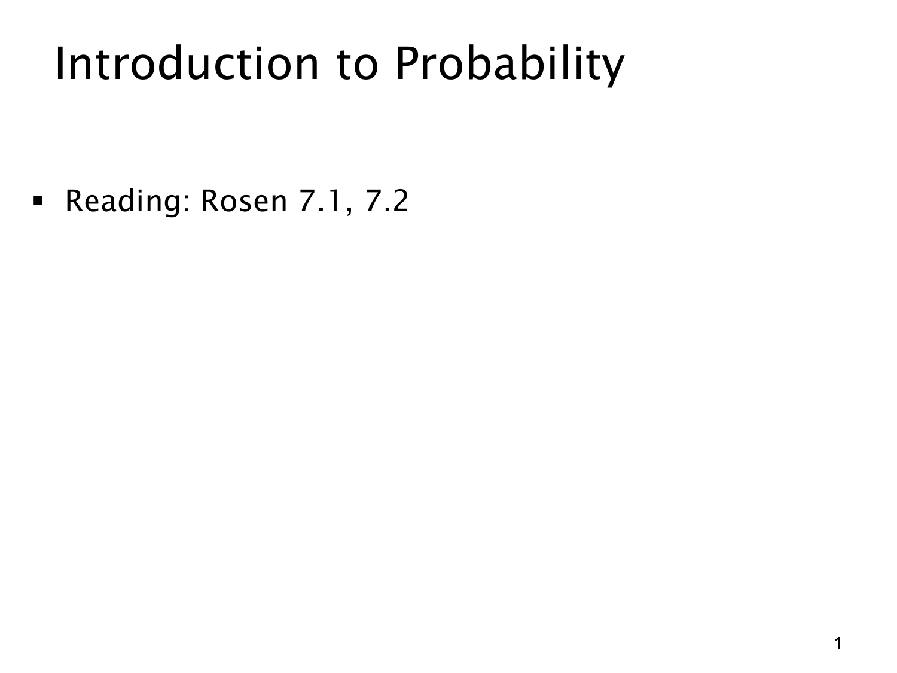

L1.9 · 第 1 页讲解原文
查看这一页课件

概率入门：从计数到发生的可能性
这一页是本章标题页：Introduction to Probability（概率入门）。课件指定的配套阅读是 Rosen 的 7.1、7.2 节。
前面学过的 Counting 回答“有多少种结果”。概率进一步问：“在这些可能的结果中，某件事发生的可能性有多大？”例如，一颗公平六面骰子有 6 种结果，偶数有 3 种，因此掷出偶数的概率为
63=21.
这里能用“满足条件的结果数除以全部结果数”，是因为六个面出现的机会相同。等可能（equally likely）是这种计数公式的前提；若骰子有偏，就需要为不同结果指定不同概率。
学习概率时，要先明确一次试验的所有可能结果，再明确所关心的事件，最后选择适合的计算方法。计数法则、排列组合以及集合的交、并、补，会成为表达和计算概率的工具。
本页没有定理或习题，需要理解的是这个转变：计数提供可能结果的数量，概率把数量与试验模型结合，描述事件发生的机会。